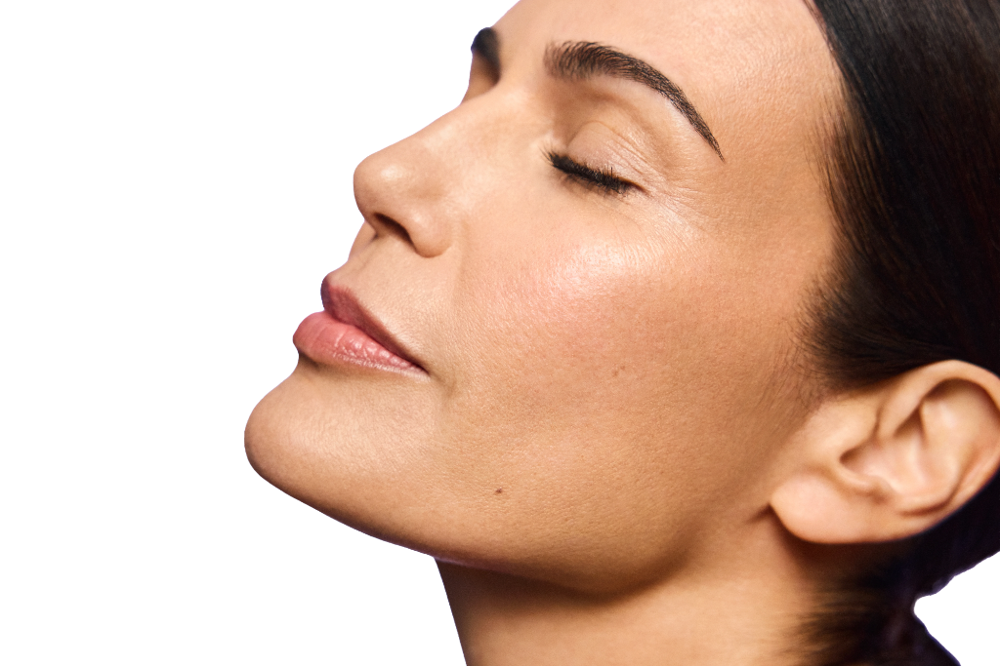
K-Beauty skin intelligence meets 3D facial analysis.
SuA Glow offers Aura 3D Skin Analysis in Carrollton, serving Dallas–Fort Worth patients looking for a more detailed, provider-guided approach to skin health and aesthetic planning.
You know what you see in the mirror. We like to look closer.
With one advanced capture, Aura creates a photorealistic 3D digital twin of your face + neck—giving your SuA Glow provider a closer look at your skin and facial features before building your personalized aesthetic plan.
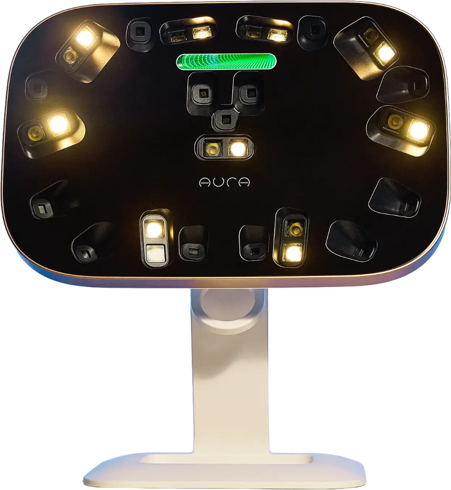
SEE MORE. GUESS LESS.
3D imaging. Provider insight. A plan built around your actual skin.
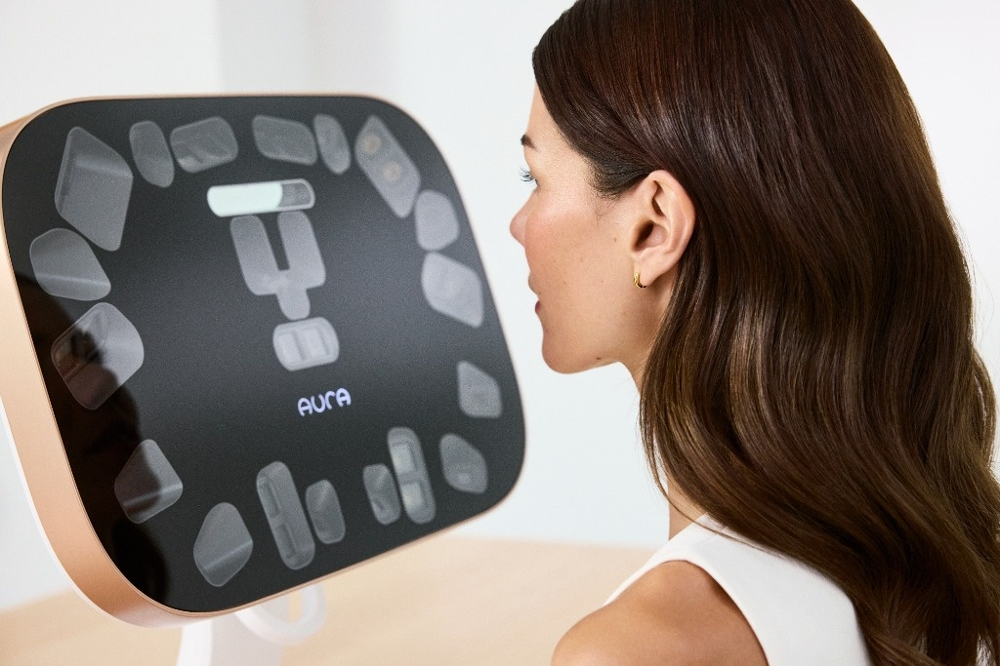
Pores, texture, fine lines, visible redness, brown spots and facial proportions.
Aura creates a photorealistic 3D digital twin of your face + neck for review with your provider.
Review your analysis, concerns, goals and treatment history with your SuA Glow provider.
Your personal Aura skin analysis report + a personalized skin health plan.
Your full consultation fee may be applied toward a SuA Glow treatment within 60 days.
None. No needles. No heat. No treatment. Just 3D imaging.
Aura is an advanced 3D facial imaging and skin analysis system that creates a high-resolution digital twin of your face + neck.
One Aura capture creates an interactive 3D view of your face + neck, giving you and your SuA Glow provider a shared way to look at your skin, facial features and aesthetic goals—together.
K-Beauty isn’t about doing more. It’s about understanding what your skin needs—and choosing what makes sense for it.
HYDRATE
Restore moisture + glow
CALM
Support stressed skin
REFINE
Improve texture + tone
STIMULATE
Support collagen + firmness
And sometimes, the right plan is to wait.
Aura gives us another way to see your skin. Your SuA Glow provider considers your skin concerns, aesthetic goals, treatment history, Aura analysis and clinical assessment together to help build a personalized approach.
TECHNOLOGY SHOWS US MORE.
YOUR PROVIDER DECIDES WHAT MATTERS.
That’s where your glow plan starts.
Aura gives you and your SuA Glow provider another way to visualize key skin characteristics and facial features as part of your consultation. Aura’s own materials support analysis of wrinkles, texture, red areas, brown spots, pores, and facial dimensions.
Look beyond what makeup and lighting can hide.
Explore visible smoothness, irregularity and skin surface.
Take a closer look at visible lines across the face.
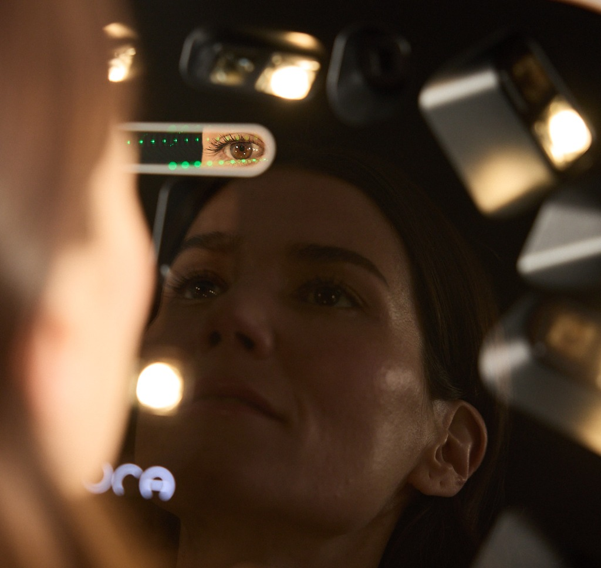
Visualize areas of visible redness and variation in skin tone.
Explore visible areas of pigmentation and discoloration.
View facial features and proportions in three dimensions.
WHAT WE SEE HELPS SHAPE WHAT WE DO NEXT.
Not every finding needs treatment. The goal is to understand your skin before deciding what makes sense for it.
Your consultation shouldn’t depend on memory, mirrors or guesswork. Aura gives you and your SuA Glow provider a shared 3D view of your face—so you can look at the same information, discuss what matters and build your aesthetic plan together.
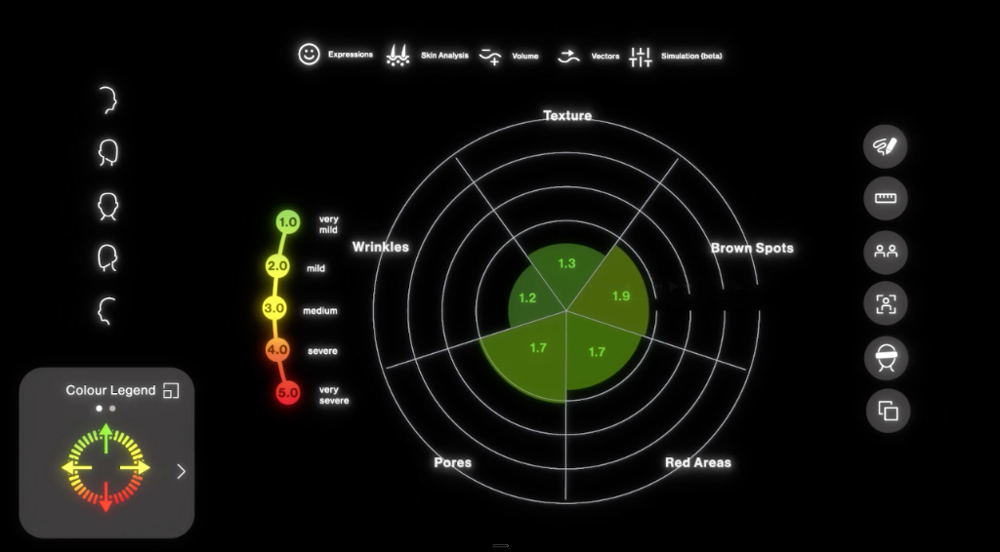
ANALYZELook more closely at wrinkles, pores, texture, brown spots and visible red areas.
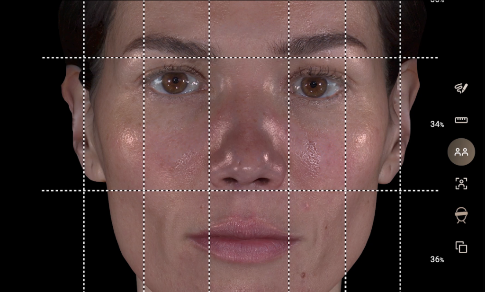
MEASUREExplore facial proportions, distances and angles in 3D space.
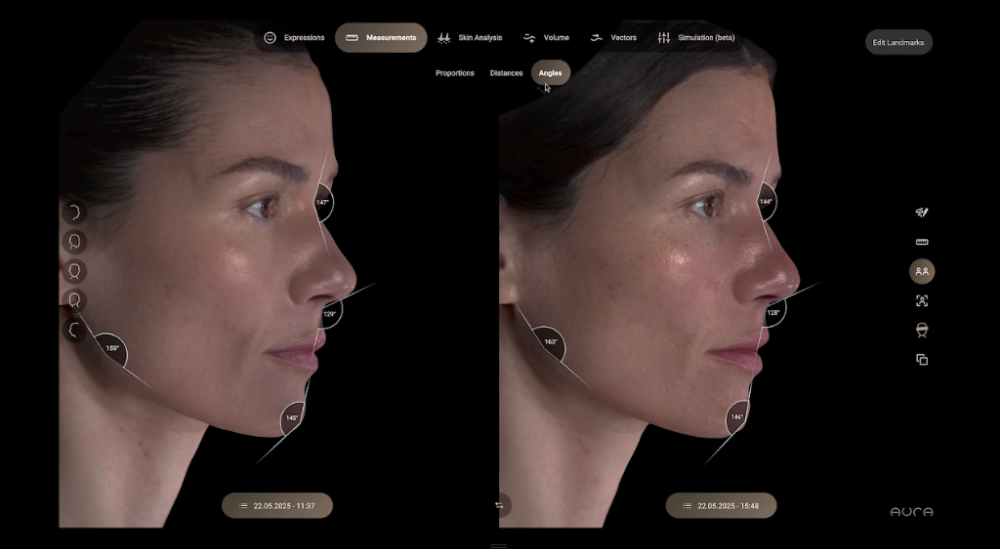
COMPAREPlace scans side by side to visualize changes and track progress over time.
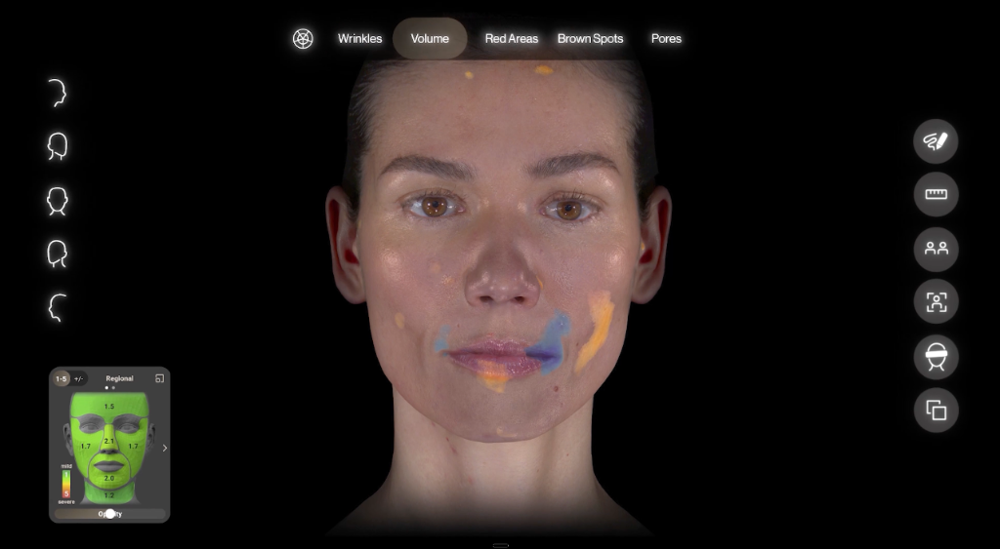
VISUALIZEExplore volume, vectors and simulations as part of the consultation conversation.
SAME FACE. SAME SCREEN. BETTER CONVERSATION.
3D visualizations, measurements and simulations are consultation tools and do not predict or guarantee treatment results.
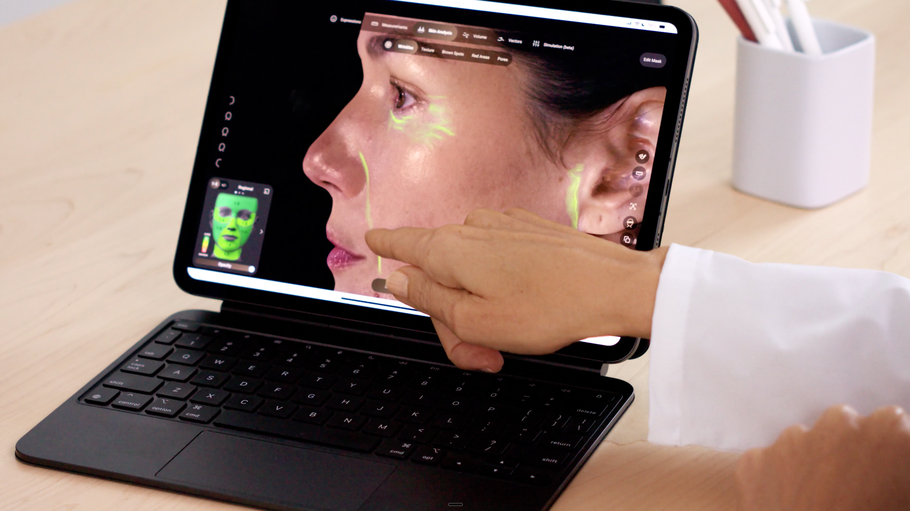
Provider-Guided Consultation
Clinical assessment contextualizes every diagnostic data point.
Aura gives us another way to see your skin and facial features.
But your treatment plan isn’t built by a screen.
Your SuA Glow provider reviews your Aura 3D analysis alongside your concerns, aesthetic goals, treatment history and clinical assessment to decide what makes sense for your skin—and what doesn’t.
Review your 3D scan, skin characteristics and facial features together.
Talk about what matters to you—and what you actually want to change.
Separate what could be treated from what actually makes sense to treat.
Build a personalized strategy around your skin, goals and timeline.
YOUR SKIN DOESN’T NEED EVERYTHING. IT NEEDS THE RIGHT THINGS.
Technology gives us more information. Clinical judgment decides what matters.
Your Aura consultation helps us understand what your skin is showing, what matters to you—and which SuA Glow treatment category may make sense to explore next.
Hydration • Radiance • Texture • Overall Skin Quality
Skin boosters and skin-quality treatments designed to support healthier-looking, more luminous skin.
Services & Treatments:
Movement • Volume • Facial Balance • Refinement
Provider-guided injectables may help support facial balance, soften expression lines and refine selected features.
Services & Treatments:
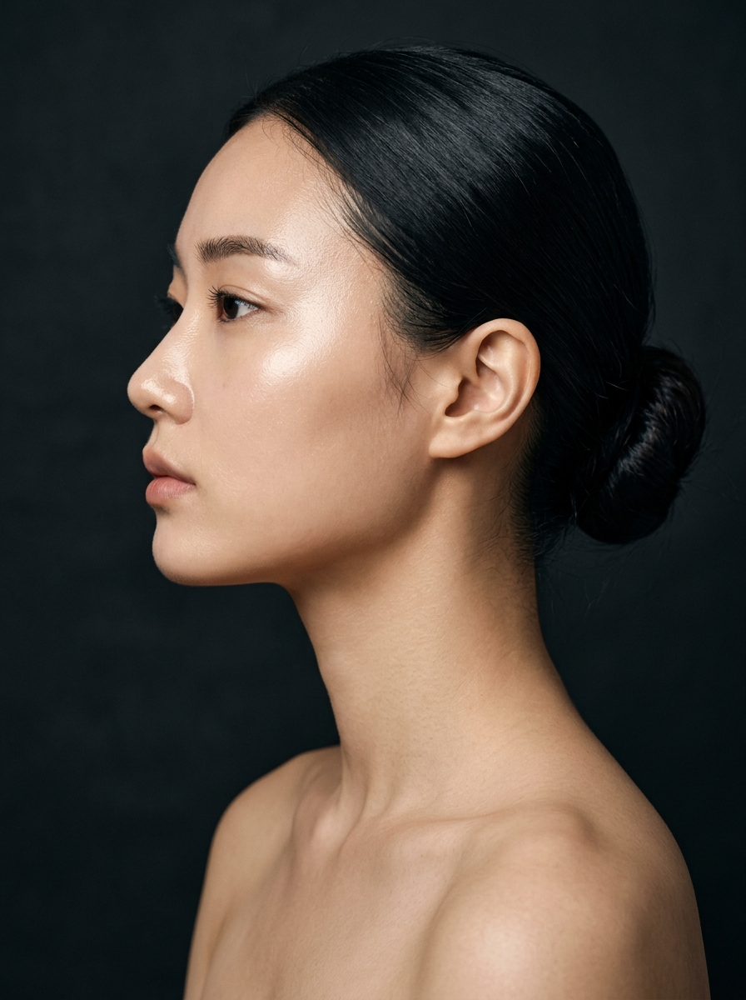
Texture • Pores • Firmness • Visible Signs of Aging
Advanced skin rejuvenation treatments that may help improve texture, refine pores and support smoother, firmer-looking skin.
Services & Treatments:
Curated • Layered • Personalized • Results-Driven
Thoughtfully designed treatment experiences that combine the best of SuA Glow to support your unique skin goals.
Services & Treatments:
Hydration • Glow • Calming • Skin Maintenance
K-Beauty facials support hydration, soothing care and visible radiance through customized, skin-first treatment plans.
Services & Treatments:
Acne Scars • Uneven Texture • Post-Acne Concerns
Targeted scar-focused treatments designed to help improve the appearance of acne scarring and uneven skin texture.
YOUR SCAN DOESN’T PICK A TREATMENT.
IT HELPS US NARROW THE CONVERSATION.
Your Aura consultation can be the beginning—not the whole story.
Explore the SuA Glow Glass Skin Method, our monthly K-Beauty membership designed around consistent skin care, thoughtful treatment planning and long-term skin quality.
Monthly. Skin-first. Seoul-inspired.
Glass Skin Method members use ongoing skin assessment alongside their monthly K-Beauty ritual to help keep treatment decisions aligned with their skin over time.
3D facial imaging + skin analysis + a personalized consultation with your SuA Glow provider.
Advanced Aura 3D imaging to take a closer look at your skin and facial features.
Dedicated time with your provider to review your analysis, concerns, goals and treatment history.
Receive a copy of your Aura skin analysis report to keep as a visual baseline for future reference.
Apply your full $100 consultation fee toward a SuA Glow treatment booked within 60 days of your consultation.
Aura is an assessment and visualization tool—not a medical diagnosis.
Your provider reviews your Aura analysis alongside your concerns, goals, treatment history and clinical assessment. Treatment recommendations, timing and results vary by individual.
3D visualizations and simulations are consultation tools and do not predict or guarantee treatment outcomes.
Everything you need to know about 3D facial imaging, consultation flow, pricing, and planning at SuA Glow.
Aura is an advanced 3D facial imaging and analysis system that creates a photorealistic digital twin of your face and neck. It gives you and your SuA Glow provider another way to visualize your skin characteristics, facial features and aesthetic goals—and look at them together during your consultation. Think: a closer look before deciding what comes next.
You may see advanced skin-analysis systems described as “AI skin analyzers,” but we prefer to describe Aura by what it actually does: advanced 3D facial imaging and analysis. Aura creates a photorealistic digital twin of your face and neck and provides visual and measurement information your SuA Glow provider can use during your consultation. Technology provides information. Your provider provides the judgment.
Aura can help visualize and analyze characteristics including wrinkles and fine lines, pores, texture, visible red areas and brown spots. Its 3D tools can also help your provider explore facial proportions, measurements, volume and other facial features, as well as compare images over time. Not every finding needs treatment. The point is to understand your skin before deciding what makes sense for it.
First: nothing is “wrong” with your face. Aura helps us visualize selected skin characteristics, facial features and measurements. Your SuA Glow provider puts that information into context with your concerns, goals, treatment history and clinical assessment. We’re not looking for imperfections to sell you treatments. We’re looking for information to have a better conversation.
No. Aura is an assessment, visualization and documentation tool. It does not replace clinical evaluation, medical diagnosis or the judgment of an appropriately licensed healthcare professional. At SuA Glow, Aura is one part of a provider-guided consultation—not the provider.
No needles. No heat. No treatment. Just imaging. Aura captures images of your face and neck to create your 3D digital twin. The scan itself is completely non-invasive.
Because better aesthetic planning starts with better information. Aura gives you and your SuA Glow provider a shared 3D view of your skin and facial features, helping us see more, measure more and have a more informed conversation about what matters to you. But technology is only part of the process. Aura gives us another way to look. Your provider decides what matters.
Clean skin wins. For the clearest view of your skin, we generally recommend arriving with a clean face when possible. Hair should also be pulled away from your face so your face and neck can be clearly captured. If you’re unsure how to prepare, we’ll walk you through it before your scan.
Nope. Your Aura consultation is about understanding your skin—not finding something to sell you. We’ll review what we see, listen to what actually matters to you and discuss what—if anything—makes sense for your skin. Sometimes the answer is one treatment. Sometimes it’s a combination. And sometimes it’s: not yet.
Because this isn’t just a free scan or a quick sales consultation. Your $100 Aura 3D Skin Health Consultation includes 3D Skin Analysis, dedicated Provider Review + Personalized Plan, and your personal skin analysis report to keep.
Your $100 becomes part of your plan: Apply your full $100 consultation fee toward a SuA Glow treatment booked within 60 days of your consultation. There’s no pressure to treat the same day—understand your skin first, decide what makes sense second.
Aura includes visualization and simulation tools that can be used during the consultation to explore potential aesthetic changes. These simulations are designed to support the conversation between you and your provider. They are visual consultation tools and do not predict or guarantee treatment outcomes.
Yes. Aura allows 3D images and scans to be compared over time, giving you and your provider another way to visualize changes and discuss your progress. Your initial scan can serve as a visual baseline, with future imaging helping inform the conversation about what comes next. Because progress is easier to talk about when you can actually see it.
Not at all. In fact, that’s one of the reasons to start with an Aura consultation. You don’t need to decide whether you need hydration, collagen stimulation, tone-up, skin rejuvenation, skin-quality treatments or injectables before you walk through the door. Start with your skin. We’ll take it from there.
YOUR NEXT STEP
Great skin starts with understanding your skin.
New patients begin with a personalized consultation and skin analysis to help establish a visible skin baseline and identify your concerns.
Your provider will review your skin, medical history, concerns, and goals to determine an appropriate individualized treatment plan.
CARROLLTON, TX • SERVING DALLAS–FORT WORTH
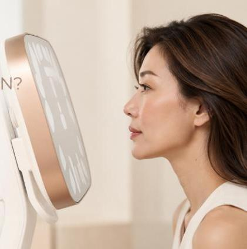